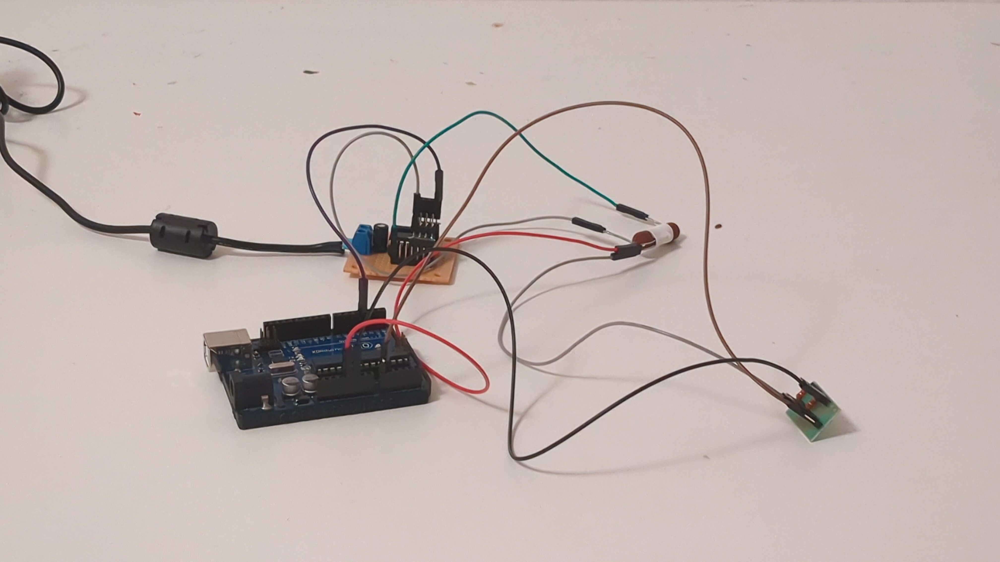
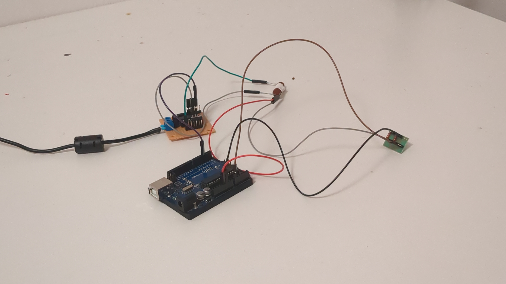

\\--Currently working on--//
- Light production at PinkWhale
- Preparing for winter semester at CTU
- Studing electronic circuits & hardware
//--Bachelor's Thesis--\\
PID Controller implementation in C++
In this project I am implementing a PID controller in C++ to run on Arduino UNO. The controlled circuit is a simple thermal system with resistor and thermistor configured as voltage divider to allow reading on voltage. The current from Arduino is amplified by op-amp using ULN2003A chip to warm up the resistor and consequently the thermistor. For correct modeling and control I use thermal calculations between objects.
Update: Bachelor thesis has been sucessfully defended!

